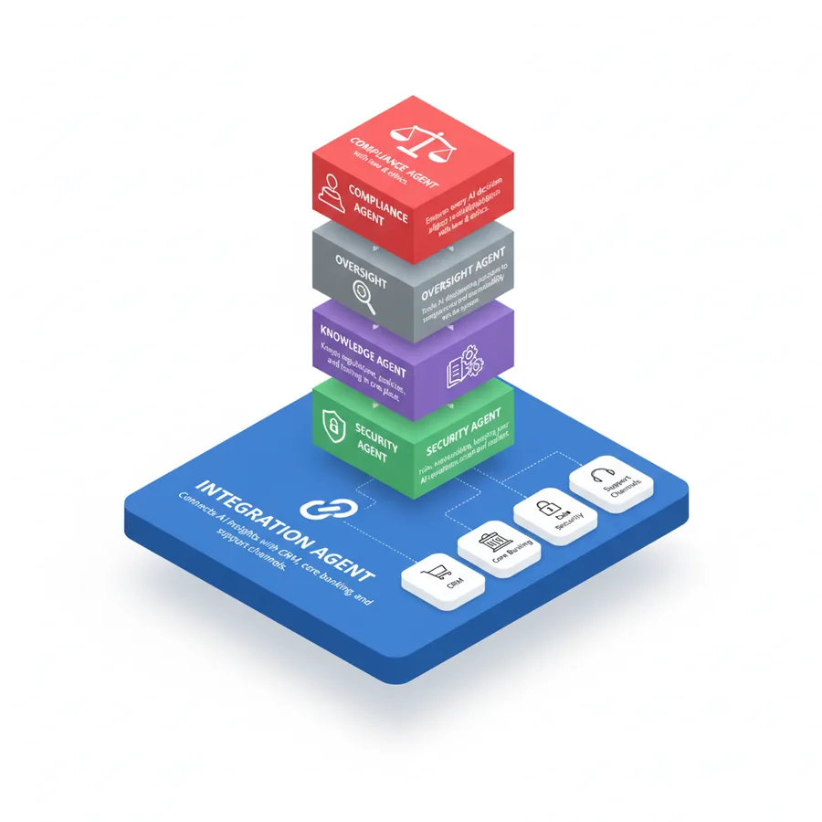
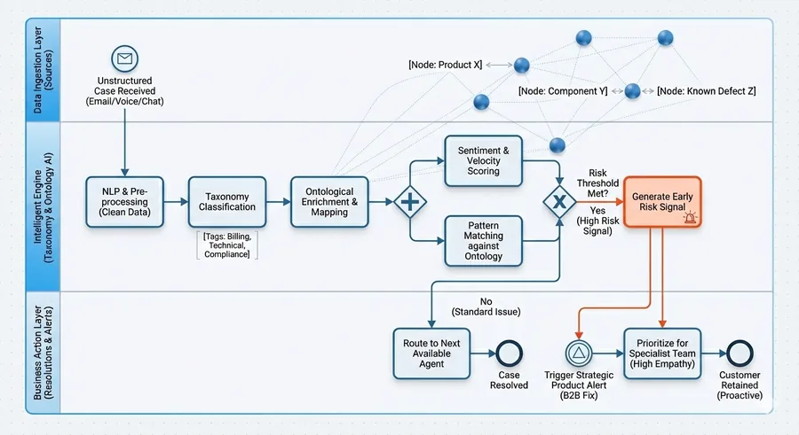
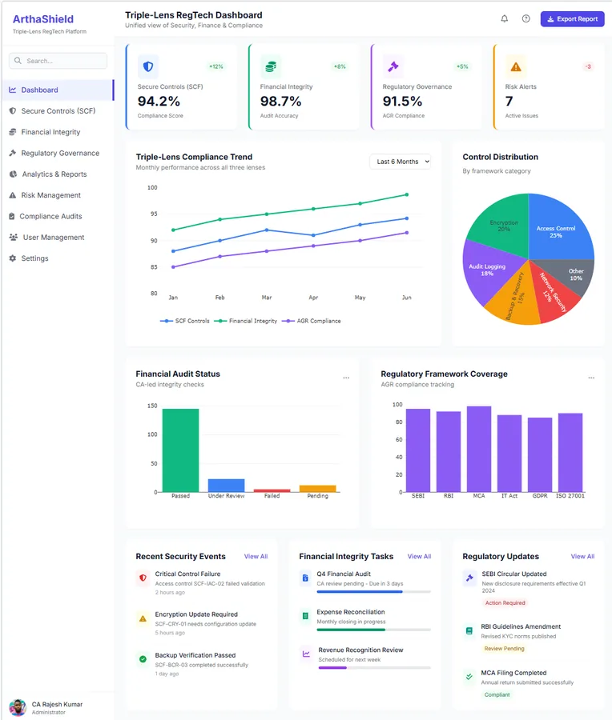

KYC & Onboarding
AI‑assisted KYC with risk scoring
OCR + entity resolution + watchlist screening, with clause‑level citations for auditors.
Exports: PDF, CSV · Audit log
ArthaShield design system
Every page on the site is built from what's on this page. Each component below is rendered live from the shared stylesheet, and its code is taken from the same markup — copy it as it is.
Foundation
Colour always comes from these variables, so both themes stay in step. Values shown are live for the current theme — flip the toggle to see night mode. Night mode is true black.
Fixed brand colours (same in both themes)
Foundation
Inter throughout. One idea per section, headlines end with a full stop. The eyebrow above a page headline is text-lg sm:text-xl, and the page headline is capped at text-4xl sm:text-6xl lg:text-7xl — never bigger. Each page has exactly one <h1>.
Eyebrow names the page
A question on its own screen?
Supporting line in muted text, one or two sentences at most.
Small print: captions, notes and footers.
Foundation
Every page carries the inline pre-paint theme script in <head> and the .theme-toggle button; js/site.js does the rest and remembers the choice across pages. Add fade-up to headline blocks and card grids to reveal them on scroll — it switches off for visitors who prefer reduced motion.
Component
Hairline pills label audiences and tags. The gradient NEW badge is used sparingly — one per page. On a dark stage, use the white-alpha versions.
Page frame
Glass pill, logo, the page's own nav links, theme toggle, an optional header action, and the hamburger menu under 768px. Mark the current page with aria-current="page". The header at the top of this page is the working version — this preview is static.
Section
The first section of every page. -mt-16 pulls the glow under the sticky header. Check the headline at 1280px: no word left alone on a line — move the <br>, don't shrink the type.
The Intelligence Layer for Financial Services
One supporting sentence that says who it's for and what changes for them.
Section
Opens most sections. Sections use py-24 sm:py-32 and alternate plain and .bg-alt backgrounds, so they separate without borders.
One supporting sentence.
Section
For four or more parallel items, usually in a .bg-alt section. The coloured category label always has a dark: pair. The meta line sits at the bottom so cards in a row line up.
OCR + entity resolution + watchlist screening, with clause‑level citations for auditors.
Classify, prioritise and deduplicate, with SLA‑aware routing.
Section
Exactly three parallel ideas. The 1px gaps over a --line background draw the dividers. Number the columns only when they really are a sequence.
Drift, anomalies and violations, caught early.
Approvals and audit-ready dashboards.
Section
Only for figures that are the point of the section — and every figure needs its basis stated nearby (a pilot, a study, a synthetic demo). The buyer-review scanner flags unsourced numbers.
Basis: counts from the Knowledge Graph concept model.
Section
Illustrations with white backgrounds sit on a white tile with soften-on-dark, so they don't glare at night. Logos get rounded-xl bg-white object-contain p-1.

The agents
Section
Horizontal steps for a real process; the vertical timeline for phases. Decorative lines go in a wrapper <div>, never directly inside <ol>. Gradient numbers need their own <span class="text-gradient"> — it can't share an element with .surface.
Build relationships between entities.
Identify patterns and context.
Trigger a workflow with human approval.
Section
A compact bar for a short message and one or two actions — downloads, a brief, a follow-up.
Download reports for compliance, fraud and onboarding.
Showcase
The one thing on the page that should stand out. It stays dark in both themes, so inside it use white-alpha colours (text-white/60, border-white/10), never theme tokens. One or two per page at most.
Showcase
The interactive graph, drawn by js/knowledge-graph.js. Place it inside a dark stage, give it #kgSvg and #kgCaption, and load the script. Hover or tap a node. Only one graph per page.
Hover or tap a node to see how ArthaShield connects it.
Showcase
Process charts and architecture diagrams sit on a white tile and scroll sideways inside their frame on phones instead of shrinking the labels. Always give lazy images their real width and height.

Swipe the diagram to explore it
Showcase
A product screenshot in a browser frame, cropped with .shot-fade so a tall image doesn't take over the page.

Showcase
.console-panel and .console-inset build demo UIs on a dark stage. Mark demo data as synthetic.
*All data synthetic for demo.
Input
Text inputs get .field and a label (visible or sr-only). Answers are .choice tiles: the native input is hidden and .key shows the number key; tick boxes use .key.tick so they stay empty until chosen. On a Netlify form, never rename the form or its field names.
Error text says what went wrong and how to fix it.
Input
For step-by-step flows like the survey. Set the bar's width in script; mark dots .is-current and .is-answered. The survey's carousel layout itself is specific to survey.html.
Rules
css/arthashield.css?v=N and js/site.js, and keeps the pre-paint theme script inline in <head>.<style> — the checker rejects it.<h1>, capped at text-4xl sm:text-6xl lg:text-7xl.href="#" and are reported. Forms keep their Netlify names.css/arthashield.css — never in one page.?v=N on every page that links the stylesheet, and in the restyle skill's page skeleton.python .claude/skills/restyle-arthashield-page/scripts/check_page.py astro-sanity-starter/<page>.html